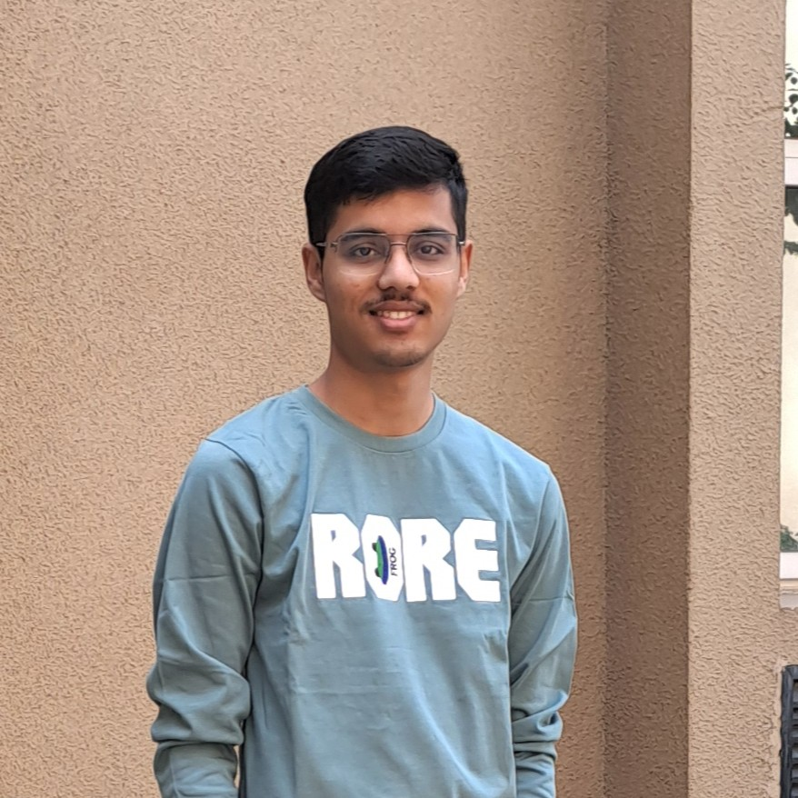

I am an undergraduate student in Artificial Intelligence at the Indian Institute of Technology Gandhinagar. Currently, I am a Visiting Undergraduate Researcher at California Institute of Technology (Caltech), advised by Dr. Ashish Mahabal, building an AI risk score to predict prostate cancer progression on active surveillance from 3D multimodal MRI. Previously, I was a Summer Undergraduate Research Fellow (SURF) at Caltech developing AI-readiness frameworks and Croissant-compliant data pipelines for medical imaging collections.
My research interests span medical AI and computer vision, with a focus on biomedical imaging, multimodal learning, and generative modeling. I am interested in developing AI methods that can understand, model, and recover information from complex visual data, ranging from scientific applications to generative vision and inverse problems.

- [Sep 2026] Presented poster titled "Making EDRN Datasets AI Ready: Measuring Readiness Across Ten Dimensions" at the 15th EDRN Scientific Workshop 2026.
- [Aug 2026] Continuing as a Visiting Undergraduate Researcher at Caltech
- [May 2026] Started Caltech SURF fellowship.
- [Dec 2025] Awarded Diffusers MVP by Hugging Face for impactful open-source contributions.
- [Aug 2025] Received 2nd Prize at IITGN Undergraduate Research Showcase for Histotripsy bubble segmentation in ultrasound images.
- [Aug 2023] Started my journey at IIT Gandhinagar as an undergrad.
- Data AI-Readiness Auditor: Building an LLM-powered tool that audits the AI-readiness of medical datasets across 10 dimensions, orchestrating document information extraction, a sandboxed code-executing exploratory data analysis agent, and multi-stage LLM scoring with a reviewer pass. Grounded judgments in cited evidence with DICOM-standard de-identification screening, and served open-weight LLMs locally with SGLang using INT8 quantization, speculative decoding, prefix caching, and hardware-aware concurrency.
- Multimodal MRI Risk Scoring for Prostate Cancer: Developing a multimodal 3D MRI-based risk score to predict biopsy-defined prostate cancer grade progression during active surveillance, aiming to improve risk stratification beyond the Prostate Imaging Reporting and Data System (PI-RADS).
- IMC Single-Cell Analysis: Developing an end-to-end pipeline for Hyperion imaging mass cytometry data from human colonic polyp tissue, encompassing cell segmentation, spillover compensation, cell typing, and spatial analysis. Comparing Cellpose-SAM and DeepCell across ~250 tissue regions to characterize segmentation quality, computational efficiency, and method-specific failure modes across tissue regions and cell types.
- Operationalized and refined a quantitative ten-dimensional framework to assess the AI-readiness of medical datasets, auditing 10 cancer collections to expose gaps in label fidelity and operational readiness.
- Developed pipelines transforming multi-modal Early Detection Research Network (EDRN) cancer datasets into Croissant-compliant, AI-ready resources for large-scale machine learning applications.
- Created tutorial notebooks demonstrating exploratory ML workflows on AI-ready medical datasets.
- Investigated whether injecting lightweight semantic (DINOv3) and structural (PiDiNet) guidance directly into a frozen SDXL diffusion prior could eliminate the need for disjoint pre-cleaning networks in blind image restoration, training on 30K+ images across multiple real-world datasets.
- Designed a two-phase training regimen consisting of coarse structural alignment via noise-prediction training over moderate-to-high noise timesteps with pixel-space regression at low-noise timesteps, followed by perceptual and semantic-similarity refinement with pixel-space losses gated to low-noise timesteps.
- Discovered that continuous low-quality latent injection anchors the diffusion prior to the input, and formulated a Restoration Sampling Strategy (RSS) that thresholds this injection across the sampling trajectory achieving an SSIM of 0.50 under compound degradation.
- Developing a real-time deep learning framework for automated segmentation of histotripsy-induced ablation zones in ultrasound imaging to enable treatment monitoring for renal tumors, using 1,280 B-mode frames from 13 RBC phantom studies in collaboration with the University of Chicago.
- Designed causal, gain-invariant temporal features computed online from past frames that capture each pixel's running temporal variability, and trained an ImageNet-pretrained ConvNeXt U-Net with leave-one-sequence-out cross-validation that segments each frame in about 2 ms.
- Outperformed prior state-of-the-art on the test set, with Dice 0.90 vs. 0.71 (+27%), mean IoU 0.90 vs. 0.75 (+20%), mean accuracy 0.94 vs. 0.80 (+17%), and Hausdorff distance 4.3 vs. 29.5 px (86% lower).
- Contributed to the development of SARTHI, a domain-adapted agricultural advisory LLM fine-tuned from Gemma-3-27B-IT using LoRA Supervised Fine-tuning across 16×H100 GPUs on a 220K-sample synthetic chain-of-thought dataset for taxonomy-driven agronomic reasoning.
- Developed LitGPT-to-HuggingFace conversion tools for standard serving stacks, indexed a 35GB+ continual pretraining corpus, and experimented with prompting techniques for structured reasoning.
- Contributed FLUX.2 Klein inpaint pipeline, resolved critical hardware compatibility and inference bugs across multiple generation pipelines such as FLUX, Kandinsky, and Cosmos.
- Awarded the Diffusers MVP title by Hugging Face for impactful open-source contributions.
- Resolved generation and export bugs related to RoPE KV cache, distributed serving, and checkpoint conversion.
- Reviewer: NeurIPS 2026 (Ethics Review Track)
- In my free time, I enjoy graphic designing, playing badminton, and mobile photography.
- Check out some of my clicks and designs.